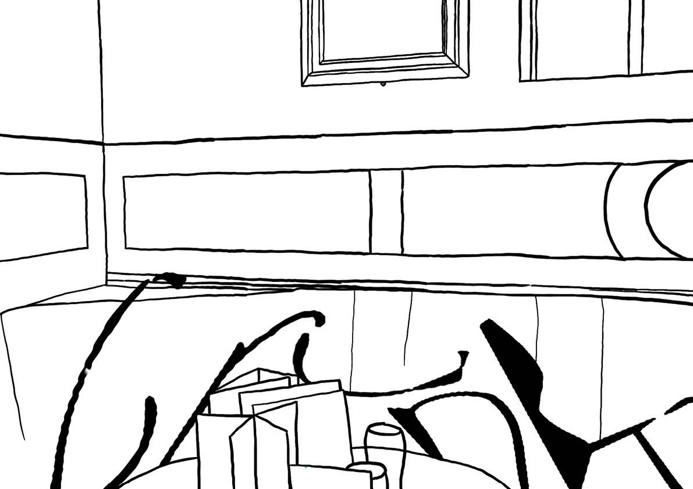

I designed the typeface ‘Crunk’ based on The Kentish Drovers, Wetherspoons, in Peckham. It represents the way people interact within the space with it having three levels of intoxication; Sober, Tipsy, Drunk. Each variation progressively becomes more distorted, mimicking slurred speech and stumbling after becoming too drunk. This typeface is non-uniform and somewhat hard to read. The numbers and special characters are represented as drinks and there is no uppercase because if you write a drunk text it is unlikely you will still use uppercase letters. ‘Crunk’ has a sense of irony and has a lot of personality to it.